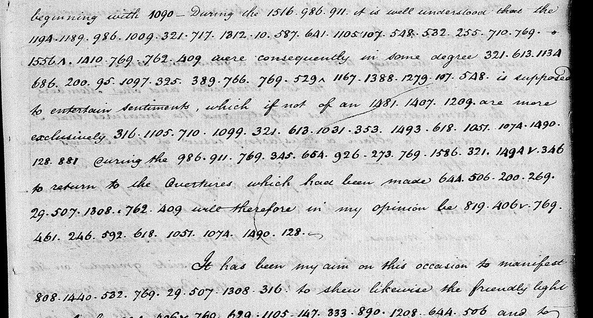

At a glanceKey from adjacent plaintext · partial (86% of the cipher)
- The documents
- Despatches of Rufus King, United States minister in London, to the Secretary of State, 1797–1803, in clerks’ copies received by the Department. The one read here is No. 29 of 13 April 1797, to Timothy Pickering.
- Where
- National Archives (NARA), RG 59, Despatches from U.S. Ministers to Great Britain, microfilm M30 rolls 4–8; No. 29 is roll 4, frames 0092–0096. Not on DECODE.
- The cipher
- A numerical code: groups 1–1599 and one 1600, written with full stops between them, for words, syllables and single letters. The = 769, of = 1410, to = 644.
- How the key was found
- From the plain words the Department’s clerks wrote over the code on 72 frames. The key was frozen and, by the contributor’s declaration, tested once on despatch No. 59, kept aside: 0.946 of covered groups against 0.165 for the best of 200 shuffled keys.
- What it says
- No. 29: under the late regency Sweden leaned to France; since the King’s majority French influence at Stockholm is less, so the President’s answer declining the Swedish overtures “for the present” should be well received.
- Credit
- Key, transcriptions, test and reading by Andrew Beling, with AI agents (pull request #398). The values come from the State Department clerks’ decipherments; C. R. King’s printed Life and Correspondence served as a check. The project re-ran the test and the checks and read the frame again.
- Still open
- In No. 29, eight values behind nine words rest on its context alone, and one group (769) stands where “and” is needed: ten marked words in all. About 830 groups of the code have no value. A copy of the letter in the Adams Papers was not seen.
01 The despatches
Rufus King wrote parts of his despatches from London in a numerical code, and now and then a whole despatch. The copies the Department of State received are on NARA microfilm M30. On most of them a clerk of the Department wrote the plain word over each coded word. The contributor found 57 coded despatch copies on rolls 4 to 8, of which 48 are interlined in this way and nine are bare.

Four documents matter here:
- No. 29, 13 April 1797 (roll 4, frame 0092 for the code, 0093–0096 in clear). A coded paragraph on Sweden, 119 groups on 13 lines mixed with clear words. Nothing is written over the code, no decipherment was found on the film, and no printed text was found. This is the passage deciphered here.
- No. 59, 23 December 1797 (roll 4, frames 0272–0273). Wholly in bare code, 297 groups, with the Department’s clear text of the triplicate on the facing page. It was kept aside as the test of the key.
- No. 30, 19 April 1797 (triplicate, roll 4, frames 0117–0118), and the duplicates of No. 14, 25 April 1801 and No. 21, about 8 June 1801 (roll 7, frames 0142 and 0162). Bare code whose text is printed in C. R. King’s Life and Correspondence of Rufus King, with the coded words in italics. They were used to check the key, not claimed as readings. The two 1801 despatches are those of the project’s folder
king1801, closed on 26 October 2026 as already in print; that folder had placed the duplicates on “roll 9, not online”, and they are on roll 7, which is online.
02 The code
The groups run from 1 to 1599, with one plain 1600, and are written with full stops between them. Whole words, syllables and single letters each have a number, and longer words are built from several groups: in-flu-en-ced, par-ti-all-i-ty, ap-pro-ved. A caret after a group marks a plural or inflection, and a small v or + lets a suffix follow. The commonest groups are 769 the, 644 to, 1410 of, 321 in, 710 and, 147 that, 107 I, 10 a and 29 s.
The same code runs from King’s first coded despatch (14 January 1797) to his last (No. 89, 2 April 1803): “Mr Addington” is 128.1234.712.694.678 in No. 58 of 1802, in No. 89 and in the June 1801 run. Ralph Weber wrote that King “continued to use the same code he began with in January 1797” (1979, p. 153), but prints no table of it. It is not the code King sent Livingston in January 1802, in which the = 663.
The words and syllables fit the printed 1600-element list behind the State Department codes Weber numbers WE023 to WE028: 382 of the 411 single-group values read directly from the clerks are on that list. The numbering is another matter. Forty values were tested against Weber’s nine tables of 1600 or 1700 elements and against constant offsets, and none matched. That King’s code is a further numbering of the same printed form is the working assumption of the key builder; no outside source confirms it. On integration the key was also compared number by number with the other United States code tables in this repository (Code No. 10 of the 1788 legation code page and Code No. 16, and the WE028 sheet kept with the Anthony Morris folder): no value is shared, so this is a different cipher from those, with its own page.
03 The key
Seven AI agents transcribed 72 interlined frames from the images with no key in view: 13,603 groups in 8,459 rows, each row one word written by a clerk and the groups under it. Rows with an ambiguous placement, a doubtful digit or no word above were left out, which leaves 6,535 groups usable as equations. The key file has 764 groups, each with a grade:
| Grade | Groups | How the value was obtained |
|---|---|---|
| D | 405 | One group under one word of the clerk, by majority where pages differ. |
| S1, S2 | 129, 183 | The only element of the printed list that fits every multi-group word in which the group occurs (S1 rests on one word). |
| A | 24 | Aligned to clear texts after the test (No. 59’s clear copy, King’s print). With a tenth of the key hidden, 92 of 94 values proposed this way were right. |
| R | 15 | Read from the clerks’ multi-group words while No. 29 was being deciphered, every occurrence listed. Six of them correct grade-D values (below). |
| I | 8 | From the context of No. 29 alone. Doubtful. |
The key frozen for the test had 723 groups: 411 of grade D and 312 of grade S. Grades A, R and I were added afterwards, and six of the frozen D values were corrected (they now count under R).
Reading No. 29 exposed a systematic error in grade D. Where a clerk wrote a whole word over the first group of a word and left the other groups bare, the first group took the whole word. Six such values were corrected from multi-group words: 1097 “prepared” is pre, 926 “mer” is er, 246 “prove” is pro, 1338 “change” is dec, 287 “line” is li, and 128, which the clerks write as “Mr”, is the letter m. One more is suspected and was left (550 “case”, probably ca), and others may remain. 107 groups have two or more different words over them on different pages; the majority was taken and ties left out.
04 The held-out test
The contributor’s declaration of the test is dated 10 November 2026, 19:43 (UTC−5), and says it was written before any batch of interlined transcriptions came back. It names No. 59, the measure, and the pass rule: a score of at least 0.85 and a margin of at least 0.30 over the best of 200 shuffled keys, in one run. The measure lays the key values of the covered groups on the Department’s clear text in order and counts those that fall in place.
- The frozen key covers 224 of the 302 tokens (the 297 groups and five dashes), a coverage of 0.742.
- 212 of the 224 fall in order on the clear text: 0.946.
- Two hundred shuffled keys give a mean of 0.108 and a best of 0.165. The key passes.
The frozen key opens No. 59 as “this ca bi[net] last [night] after … consider ation ga[ve] a [de] ci ded [negative] to a propos al [of] peace made by the di rec[tory]”, where the clear text has “This Cabinet last night after several days consideration, gave a decided negative to a proposal of peace made by the Directory”.
On integration the project rebuilt the frozen key from the corpus with the contributor’s script: the file is identical byte for byte and has the SHA-256 recorded for the test, and the score comes out the same. The build reads only the interlined corpus and the printed element list. Frames 0272 and 0273 are not in the corpus, and no other copy of No. 59 is. What cannot be checked from the repository is the hour of the declaration and that there was one run: the folder arrived in a single commit, so those rest on the contributor’s statement.
05 Checks against print
These checks were not declared in advance. The frozen key was applied to three bare items transcribed without a key, and every group was laid in order on the letters of the italic words in C. R. King’s print. A group agrees when it takes exactly its key value. As a control the key’s values were permuted over its groups 1,000 times.
| Item | Groups | Covered | Agree | Score | Permuted keys, mean / best |
|---|---|---|---|---|---|
| No. 30, 19 Apr 1797 | 286 | 227 | 201 | 0.885 | 0.094 / 0.181 |
| No. 14, 25 Apr 1801 | 124 | 100 | 85 | 0.85 | 0.083 / 0.21 |
| No. 21, c. 8 Jun 1801 | 12 | 9 | 9 | 1.0 | 0.043 / 0.222 |
No permuted key reached the key’s score on any item. The nine covered groups of the twelve in the June 1801 run fall on “Lord Hawkesbury and Mr Addington”. The print was made from King’s press copies, not from the copy the Department received, and the No. 30 triplicate is faint (eight groups have an unreadable digit), so some disagreement is expected. The project re-ran the script and got the same file.
06 No. 29, on Sweden
The coded paragraph, with the decoded words in italics and King’s clear words in roman. A word in square brackets with a question mark rests on a value taken from this letter’s context alone.
… beginning with Sweden. During the late regency it is well understood that the Duke Regent [?indulged] a partiality for France, and the measures of the government were consequently in some degree influenced by this [?predilection]. The King since his [?majority] is supposed to entertain sentiments, which if not of an opposite nature are more exclusively national, and French influence is less at [?Stockholm] than during the regency. The answer which the President instructed me to return to the Overtures which had been made to us by [?the] [?Swedish] government will therefore in my opinion be well received [?and] approved at [?Stockholm].
It has been my aim on this occasion to manifest our [?esteem] for the [?Swedish] nation, to shew likewise the friendly light in which we received the proposal that had been made to us, and to state in a candid manner the motives that have influenced the President for the present to decline the overtur[e].
The despatch then goes on in clear, to King’s signature on frame 0096, about the Maryland Bank Stock, Captain Home, seamen and the news of the war. The whole of it is transcribed below.
The contributor’s notes place the paragraph as follows. The regency is the guardianship of Duke Karl, which ended when Gustav IV Adolf took over the government on 1 November 1796 (Svenskt biografiskt lexikon, “Gustav IV Adolf”). The overture is named by Pickering himself, writing to John Adams on 24 September 1798: the “propositions made by the Swedish minister, Baron d’Engerstrom … to Mr. Pinckney”, answered by his letter to King of 17 September 1796 and by “Mr. King’s communications on the subject, extracted from his letters of April 13th 1797, & June 5th following” (Founders Online). Engeström’s note of 1794 invited the United States to accede to the Danish-Swedish neutrality convention of 27 March 1794 (Papers of Alexander Hamilton 16:548–50, notes). Pickering’s instruction of 17 September 1796 was not read. (These references are the contributor’s and were not checked again here.)
How firm is it? Of the 119 groups (82 distinct):
- 105 have a value of grade D, S2, A or R (grade C in this site’s terms, from known plaintext), and all but one fit. The one is the 769 (the) of line 15, where the sense wants “and”. A slip is supposed: in the clerks’ interlined frames 769 is never written under “and”, and 710, the code’s “and”, is never “the”. Only one copy of No. 29 is on the film, so it cannot be told whether the slip was the encoder’s or a copyist’s.
- 3 have an S1 value, resting on one word elsewhere (grade M).
- 11 rest on eight values inferred from this letter alone (grade I): 717 dul in “indulged”, 389 lect in “predilection”, 1279 major in “majority”, 1074 ock and 1490 hol in “Stockholm” (twice), 507 wed in “Swedish” (twice), 1440 “esteem”, and 269 where “the” is wanted. A group read as 269 occurs once more, under a clerk’s “the” in a despatch of 10 January 1799 (M30 roll 6, frame 0013), but its first digit may be a corrected 7, so the value stays at grade I.
The key as frozen for the test already gives 94 of the 119 groups a value (87 of them the value used here; the other seven are grade-D values corrected since). Measured on the decoded words alone, 65 of 76 are free of a mark (0.855); over the whole despatch with its clear text the share is 0.994. Because the coded part on its own is under the 95% bar, the despatch is classed as deciphered in part. Andrew Beling read the paragraph as sentences against the frame and signed it off. On integration the frame was fetched again and all 119 groups were checked a second time on the image, with the transcription in view: every group stands, including 1051 (twice), 269 and the 769 of line 15.
07 What remains open
- The eight context-only values of No. 29 and the 769 where “and” is needed. None of the eight groups occurs under a clerk’s word in the 72 transcribed frames, in No. 59 or in the print checks. (269 has one doubtful sighting on a frame outside them: section 05.) “hol” is not on the printed element list, so the split of “ock-hol” is the least certain; “esteem” is a guess among words of that sense. A clear copy of the letter (King’s letterbook at the New-York Historical Society, the Pickering Papers) or an occurrence in a coded frame not yet transcribed would settle them.
- The Adams Papers copy. Weber (p. 143) lists a King to Pickering letter of 13 April 1797 on Adams Papers reel 392 among the uses of his WE025. The Department’s copy of that date is in the 769 code. The Adams Papers copy was not seen; the contributor suggests it may be one of the extracts Pickering said in 1798 he would send to John Quincy Adams “putting some parts of them in cypher”, which would be in another code. If it is a copy of No. 29, it would check this reading.
- The key is partial: about 830 of the 1,600 groups have no value. Forty-eight frames that the catalogue’s OCR flags as coded on rolls 5 and 6, and about eight small items on roll 6, were not opened. Grade D may still carry errors of the kind described above.
- Transcription. All transcriptions were made by AI agents from the images. No. 29 had one reading without a key and one on integration with the transcription in view; there is no second reading made blind, and no check by a palaeographer.
- No. 29 was not found in print (Life and Correspondence vol. 2, American State Papers, Foreign Relations 1–2, Founders Online). That is not the same as unpublished: the Pickering Papers and King’s own papers were not searched.
Full texts
The transcription and the decryption of every document on this page, so that the reading can be used and checked. Short files are shown here; all are in the repository.
No. 29, London, 13 Apr 1797 (M30 roll 4 frames 0092-0096; code on 0092) read in part
King reports on Sweden: under the late regency (Duke Karl's guardianship, which ended when Gustav IV Adolf took over the government on 1 Nov 1796; Svenskt biografiskt lexikon, 'Gustav IV Adolf') Swedish policy favoured France; the young King is more national in outlook and French influence at Stockholm is less, so the President's answer to the Swedish overtures, declining them 'for the present', should be well received there. The overture is the Swedish minister Engeström's proposition to Thomas Pinckney, which Pickering answered through King on 17 Sept 1796 (Pickering to John Adams, 24 Sept 1798, Founders Online, Adams Papers 99-02-02-3023). The despatch then turns, in clear, to the Maryland Bank Stock, Captain Home and seamen.
Builds coherent sentences, but its word share is at or above the 95% read bar, and it stays read in part for another reason stated on this page (99% here); the holes are marked in the reading.
Transcription
# Rufus King to the Secretary of State (Timothy Pickering), No. 29, London, 13 April 1797.
# NARA RG 59, Despatches from US Ministers to Great Britain, vol. 5 (M30 roll 4), frame 0092 right page
# (https://catalog.archives.gov/medialz/dc-metro/rg-059/603720/M30/M30-004/M30-004-0092.jpg). Clerk's copy; the code is bare
# (nothing written over it) and no decipherment was found on 0092-0096.
# Transcribed blind (no key in view) on 11 Nov 2026 by an AI agent from the full-resolution frame, in strips enlarged 1.5-1.9x;
# doubtful digits checked at 4-6x. Clear words in {}; code groups as written, with the clerk's full stops.
# ^ = caret after a group; v = small v after a group; + = mark after a group (l. 8: may be only a line-filler);
# ? = unreadable digit. Notes on doubtful readings are after the text. Line = manuscript line of the right page.
# Frame 0093 (both pages, clear text: Maryland Bank Stock, Captain Home, Seamen) is summarised below. The despatch runs in clear
# to King's signature on 0096 R, with no further code (frames to 0104 checked); the whole clear text is in reading_no29.md.
# Correction after the blind reading: R12 and R16 '105?' (last digit 1 or 7) re-read on 11 Nov 2026 at full resolution as 1051
# (the 5's flag runs into a plain 1; a 7 would have a top bar). This re-read was made with the decode in view (not blind); 1057 is
# not excluded. R14 '269' and R15 '769' were looked at again at the same time and stand as transcribed.
004-0092 L01 {[docket, rotated, of preceding despatch] No. 28. R. King Esqr. / March 12. 1797. recd. May 6. / Recorded page 112 [?]; further faint pencil/ink notes illegible; rest of page is bleed-through}
004-0092 R01 {No. 29.}
004-0092 R02 {London Apr. 13th 1797.}
004-0092 R03 {Dear Sir,}
004-0092 R04 {There are several Subjects mentioned in different Letters}
004-0092 R05 {that I have received from you, concerning which I should make you}
004-0092 R06 {some Report: I will take notice of them as they occur to my recollection,}
004-0092 R07 {beginning with} 1090 {– During the} 1516. 986. 911. {it is well understood that the}
004-0092 R08 1194. 1189. 986. 1009. 321. 717. 1312. 10. 587. 641. 1105. 107. 548. 532. 255. 710. 769. +
004-0092 R09 1556^. 1410. 769. 762. 409 {were consequently in some degree} 321. 613. 1134
004-0092 R10 686. 200. 95. 1097. 325. 389. 766. 769. 529^ 1167. 1388. 1279. 107. 548. {is supposed}
004-0092 R11 {to entertain sentiments, which if not of an} 1481. 1407. 1209. {are more}
004-0092 R12 {exclusively} 316. 1105. 710. 1099. 321. 613. 1031. 353. 1493. 618. 1051. 1074. 1490.
004-0092 R13 128. 881 {During the} 986. 911. 769. 345. 654. 926. 273. 769. 1586. 321. 1494v. 346
004-0092 R14 {to return to the Overtures which had been made} 644. 506. 200. 269.
004-0092 R15 29. 507. 1308. 762. 409 {will therefore in my opinion be} 819. 406v. 769.
004-0092 R16 461. 246. 592. 618. 1051. 1074. 1490. 128. –
004-0092 R17 {It has been my aim on this occasion to manifest}
004-0092 R18 808. 1440. 532. 769. 29. 507. 1308. 316. {to shew likewise the friendly light}
004-0092 R19 {in which} 709^ 406v 769. 629. 1105. 147. 333. 890. 1208. 644. 506 {and to}
004-0092 R20 {state in a candid manner the motives that have influenced the}
004-0092 R21 {President for the present} 644. 1338. 287. 1210. 769. 998. 918. –
004-0092 R22 {[heading] Maryland Bank Stock}
004-0092 R23 {I have omitted saying any thing respecting this Subject,}
004-0092 R24 {because I could say nothing that would amount to such information} {[catchword] as}
004-0092 R25 {[foot] Secretary of State &c. &c. &c.}
004-0093 L1-20 {as would authorise a satisfactory opinion concerning the result of the endeavours ... [Maryland Bank Stock continued: Lord Chancellor, Secretary of Foreign Affairs, Accomptant General of the Court of Chancery, claim of Russell] ... considered and satisfied. –}
004-0093 R1-22 {I will continue to resist the impolicy as well as the injustice of such a condition ... [heading Captain Home: complaint against the offensive conduct of this officer, Lord Grenville, Mr. Adet] ... [heading Seamen: protections, Mr. Pinckney] ... the Enquiries that had / been}
# Doubtful readings (from the transcriber's notes):
# 004-0092 L01: docket readings approximate; not code
# 004-0092 R08: final mark after 769. is a short dash with a small cross (-+), at the line end; read as plus, may be only a line-filler; separator between 1105 and 107 is an apostrophe-like stroke
# 004-0092 R09: 1134: second digit 1 carries a small cross-tick (looks like 1+ or t); read 1
# 004-0092 R11: 1407 and 1209: the 0 is written with an inner stroke (theta-like), same form as the 0 in 1308; read 0 (alt 8)
# 004-0092 R12: 105?: last digit 1 or 7 (5's flag runs over it); same form as in line 16
# 004-0092 R13: 1494v: final 4 is a full-height barred A-form (a 4, not a caret), followed by a small v
# 004-0092 R15: 1308: 0 theta-like (see line 11); a stray dot/comma between 1308. and 762
# 004-0092 R16: 105?: last digit 1 or 7, as line 12
# 004-0092 R19: colon-like mark between 629 and 1105
# 004-0092 R21: ink blot before 'present'
# 004-0093 L1-20: no figures on the page; full clear text in reading_no29.md
# 004-0093 R1-22: no figures on the page; full clear text in reading_no29.mdDecryption
# Rufus King to the Secretary of State, No. 29, London, 13 April 1797 (NARA M30 roll 4, frame 0092 right page): decryption, line by line.
# T = transcription (no29_transcription.txt); D = each code group replaced by its value in key.tsv (python3 scripts/king_code.py decode
# --key key.tsv no29_transcription.txt), clear words in {}; W = the line as words, with spelling and word division normalised.
# Marks: [?x] = value read from the context of this letter only (key grade I), doubtful until another occurrence or a clear text
# confirms it; [769 = the: ?and] = the group's key value does not fit and a slip is supposed; [e] = letter supplied; marks ^ v + after a
# group are the clerk's (plural or inflection); + after 'the' in line 8 may be a line-filler. Values of grade R (read here on 11 Nov 2026
# from the clerks' multi-group words, see key.tsv source column) are given without a mark: reg 986, par 587, ty 548, pre 1097,
# nature 1209, ite 1407, s 29, er 926, ap 461, pro 246, dec 1338, li 287, ne 1210, m 128.
# Counts over the 119 code groups of the letter (82 distinct): 108 have a key value of grade D, S, A or R (69 D, 18 S, 2 A, 19 R),
# and all but one fit (769 in line 15); 11 rest on the eight grade-I values (717, 389, 1279, 1074 x2, 1490 x2, 507 x2, 1440, 269).
# With the key as frozen for the test (build/key_v1.tsv) 94 of the 119 groups (79%) have a value; with build/key_v2.tsv 96.
004-0092 L01
T: {[docket, rotated, of preceding despatch] No. 28. R. King Esqr. / March 12. 1797. recd. May 6. / Recorded page 112 [?]; further faint pencil/ink notes illegible; rest of page is bleed-through}
W: (docket of No. 28 on the left page; not part of No. 29)
004-0092 R01
T: {No. 29.}
W: No. 29.
004-0092 R02
T: {London Apr. 13th 1797.}
W: London Apr. 13th 1797.
004-0092 R03
T: {Dear Sir,}
W: Dear Sir,
004-0092 R04
T: {There are several Subjects mentioned in different Letters}
W: There are several Subjects mentioned in different Letters
004-0092 R05
T: {that I have received from you, concerning which I should make you}
W: that I have received from you, concerning which I should make you
004-0092 R06
T: {some Report: I will take notice of them as they occur to my recollection,}
W: some Report: I will take notice of them as they occur to my recollection,
004-0092 R07
T: {beginning with} 1090 {– During the} 1516. 986. 911. {it is well understood that the}
D: {beginning with} sweden {– During the} late reg ency {it is well understood that the}
W: beginning with Sweden. – During the late regency it is well understood that the
004-0092 R08
T: 1194. 1189. 986. 1009. 321. 717. 1312. 10. 587. 641. 1105. 107. 548. 532. 255. 710. 769. +
D: du ke reg ent in [?dul] ged a par ti all i ty for france and the +
W: Duke Regent in[?dul]ged a partiality for France, and the
004-0092 R09
T: 1556^. 1410. 769. 762. 409 {were consequently in some degree} 321. 613. 1134
D: measure^ of the govern ment {were consequently in some degree} in flu en
W: measures of the government were consequently in some degree influen-
004-0092 R10
T: 686. 200. 95. 1097. 325. 389. 766. 769. 529^ 1167. 1388. 1279. 107. 548. {is supposed}
D: ced by this pre di [?lect] ion the king^ since his [?major] i ty {is supposed}
W: ced by this pre-di[?lect]ion. The King, since his [?major]ity, is supposed
004-0092 R11
T: {to entertain sentiments, which if not of an} 1481. 1407. 1209. {are more}
D: {to entertain sentiments, which if not of an} oppose ite nature {are more}
W: to entertain sentiments, which, if not of an oppos(e)ite nature, are more
004-0092 R12
T: {exclusively} 316. 1105. 710. 1099. 321. 613. 1031. 353. 1493. 618. 1051. 1074. 1490.
D: {exclusively} nation all and french in flu ence is less at st [?ock] [?hol]
W: exclusively national, and French influence is less at St[?ock][?hol]-
004-0092 R13
T: 128. 881 {During the} 986. 911. 769. 345. 654. 926. 273. 769. 1586. 321. 1494v. 346
D: m than {During the} reg ency the an sw er which the president in structv me
W: m than during the regency. The answer which the President instructed me
004-0092 R14
T: {to return to the Overtures which had been made} 644. 506. 200. 269.
D: {to return to the Overtures which had been made} to us by [?the]
W: to return to the Overtures which had been made to us by [?the]
004-0092 R15
T: 29. 507. 1308. 762. 409 {will therefore in my opinion be} 819. 406v. 769.
D: s [?wed] ish govern ment {will therefore in my opinion be} well receivev the
W: S[?wed]ish government will therefore in my opinion be well received, [769 = the: ?and]
004-0092 R16
T: 461. 246. 592. 618. 1051. 1074. 1490. 128. –
D: ap pro ved at st [?ock] [?hol] m –
W: approved at St[?ock][?hol]m. –
004-0092 R17
T: {It has been my aim on this occasion to manifest}
W: It has been my aim on this occasion to manifest
004-0092 R18
T: 808. 1440. 532. 769. 29. 507. 1308. 316. {to shew likewise the friendly light}
D: our [?esteem] for the s [?wed] ish nation {to shew likewise the friendly light}
W: our [?esteem] for the S[?wed]ish nation, to shew likewise the friendly light
004-0092 R19
T: {in which} 709^ 406v 769. 629. 1105. 147. 333. 890. 1208. 644. 506 {and to}
D: {in which} we^ receivev the propose all that had been made to us {and to}
W: in which we received the proposal that had been made to us, and to
004-0092 R20
T: {state in a candid manner the motives that have influenced the}
W: state in a candid manner the motives that have influenced the
004-0092 R21
T: {President for the present} 644. 1338. 287. 1210. 769. 998. 918. –
D: {President for the present} to dec li ne the over tur –
W: President for the present to decline the overtur[e]. –
004-0092 R22
T: {[heading] Maryland Bank Stock}
W: Maryland Bank Stock
004-0092 R23
T: {I have omitted saying any thing respecting this Subject,}
W: I have omitted saying any thing respecting this Subject,
004-0092 R24
T: {because I could say nothing that would amount to such information} {[catchword] as}
W: because I could say nothing that would amount to such information [as]
004-0092 R25
T: {[foot] Secretary of State &c. &c. &c.}
W: Secretary of State &c. &c. &c.
004-0093 L1-20
T: {as would authorise a satisfactory opinion concerning the result of the endeavours ... [Maryland Bank Stock continued: Lord Chancellor, Secretary of Foreign Affairs, Accomptant General of the Court of Chancery, claim of Russell] ... considered and satisfied. –}
W: (clear text, summarised here; in full in reading_no29.md)
004-0093 R1-22
T: {I will continue to resist the impolicy as well as the injustice of such a condition ... [heading Captain Home: complaint against the offensive conduct of this officer, Lord Grenville, Mr. Adet] ... [heading Seamen: protections, Mr. Pinckney] ... the Enquiries that had / been}
W: (clear text, summarised here; in full in reading_no29.md)
# ## Notes on the holes
#
# - *[?indulged]* (717 = dul), *[?predilection]* (389 = lect), *[?majority]* (1279 = major): one syllable in each word comes from
# context. The other groups are known (in, ged; pre, di, ion; i, ty). Each of the three values is on the printed element list,
# and no other group has it.
# - *[?Stockholm]*, twice: 1051 = St and 128 = m are established. 1074 = ock and 1490 = hol come from context. "hol" is not on
# Weber's list, so the split of "ockhol" between the two groups is a guess. The place is not in doubt: King is contrasting the
# Swedish court under the regency with the court under the King.
# - *[?Swedish]*, twice: 29 = s and 1308 = ish are established, and 507 = wed comes from context. Sweden itself is 1090, read in
# clear by a clerk elsewhere.
# - *[?the]* (269): the sense requires "the", but "the" is 769 (437 times in the corpus). The group reads clearly as 269 on the
# frame, so it is either the encoder's slip or a second number for "the". A second, doubtful sighting: on M30 roll 6
# frame 0013 (10 Jan 1799) a clerk wrote "the" over a group read 269 whose first digit may be a corrected 7.
# - *[?and]*: the group is 769 (the), clearly written, where "and" (710) is needed. A slip is supposed; 769 is never "and"
# in the interlined corpus, and with one copy of the letter on the film it cannot be told whether it was the encoder's.
# - *[?esteem]* (1440): a word of this sense is certain, but which word is not. Respect, consider(ation), regard and friendship
# have other numbers in this code.
# - "opposite" is oppose (1481) + ite (1407), spelt as the encoder built it. "national" and "partiality" use the group 1105, which
# the clerks write as "all" and as "al". Neither is counted as a hole.
# - The despatch goes on beyond this page in clear, on other subjects, to King's signature on frame 0096 R, with no further code.
# It is transcribed in full in reading_no29.md and is not counted here.
#
# ## Count
#
# Code groups: 119 (82 distinct). 108 have a key value established from the clerks' decipherments, the print checks or the
# alignments, and 107 of those fit. 11 rest on context only, plus the 769 slip. On the reading of the whole despatch in reading_no29.md
# (frames 0092-0096, clear words included), the read share measured by the project's rule is 0.994; on the decoded words alone
# it is 0.855 (65 of 76; profile.json).
# On the decoded words, the holes are the 10 `[?word]` marks of the Sweden paragraph and the supplied [e].Reading: reading_no29.md
No. 59, London, 23 Dec 1797 (M30 roll 4 frames 0272-0273): the held-out test decoded, not read
King reports that the British Cabinet has rejected a French peace proposal made through Talleyrand, the price of which was a bribe of a million sterling to the Directors, ministers and others; he vouches for the information but asks that it not be published as coming from him.
A mechanical decode with holes in most sentences: shown so that the transcription and the key can be checked and improved, not as a reading.
Transcription
frame line groups n_groups preceding_clear_text following_clear_text note M30-004-0272 1 95 550 1027 1159 706 372 1104 404 1105 9 No. 59. / London, December 23. 1797. / Dear Sir, [whole body in code] M30-004-0272 2 ?01^ 1520 177 746 212 10 1152 324 514 1130 644 10 629 1105 14 first group cut by gutter (…01 + caret mark visible) M30-004-0272 3 ?410 1401 1208 200 769 325 374 791 561 864 1127 484 561 13 first group cut by gutter (…410 visible) M30-004-0272 4 ?319 1288 — 769 246 1110 826 321 1385 745 710 769 1118 12 first group cut (…319 visible; cf. 1319 1288 in line 8); dash in the code line after 1288; first 769 smudged at the 9 M30-004-0272 5 ?28 29 721 121 109 644 431 881 703 1328 1290 200 1016 13 first group cut (…28 visible); 721 121 109 underlined with a dotted line in another ink M30-004-0272 6 ?071 524 534 618 287 640 105 769 649 1378 826 10 12 first group cut (…071 visible) M30-004-0272 7 ?064 554 1410 10 82 1351 1079 1224 644 554 325 401 514 13 first group cut (…064 visible; cf. 1064 554 in line 17) M30-004-0272 8 ?5 325 374 791^ 1456^ 710 1473^ 1127 484 561 1319 1288 29 13 first group cut (…5 visible) M30-004-0272 9 ?9 409 826 644 1166 468 609 1495 1412 1226^ 1351 1079 12 first group cut (…9 visible) M30-004-0272 10 ?224 — 107 257 931 769 56^ 61 813 561 1290 769 1100 929 13 first group cut (…224 visible; cf. 1224 in line 7); dash after it M30-004-0272 11 ?29 710 942 561 1204 1410 769 998 918 105 1126 147 36 13 first group cut (…29 visible) M30-004-0272 12 ?52 430 963 1076 1191 125 1378 321 769 321 1541 177 95 13 first group cut (…52 visible) M30-004-0272 13 1152 324 375 79 890 1208 618 10 866 365 1170 353 206 13 leading 1 of 1152 partly in gutter M30-004-0272 14 1002 32 240 1334 635 554 1234 497 880 200 769 154 529 13 leading 1 of 1002 partly in gutter M30-004-0272 15 1410 1116 1418 365 431 735 554 1452 644 1321 10 1126 287 13 M30-004-0272 16 1288 1401 710 894 1120 360 151 561 1105 609 333 321 613 13 M30-004-0272 17 1031 1288 833 735 469 565 769 1064 554 644 1298 1170 12 M30-004-0272 18 ?321 550 964 882 257 469 333 1191 125 1378 321 769 180 13 321 at gutter edge; a preceding digit may be hidden M30-004-0272 19 946 2^ 672 273 882 526 469 1208 769 1447 746 321 — 12 9 of 946 partly in gutter; line ends with a dash M30-004-0272 20 — 95 710 642 1541 926 321 1541 177 469 890 1298 1290 12 line begins with a dash; catchword 321 at foot of page M30-004-0273 21 321 10 478 147 532 959 29 1170 29 737 115 321 95 116? 14 last group runs into the gutter (116 + possible fourth digit) M30-004-0273 22 461 105 394 493 406 1288 368 364 — 1473^ 493 879 11 dash in code line after 364; 879 underlined with a tick above (clerk's query) M30-004-0273 23 493 544 590 735 1047 200 554 430 1288 321 10 208 12 M30-004-0273 24 1041 177 147 735 554 321 653 1413 109 9 With perfect respect and Esteem / I have the Honor to be Dear Sir / Yr. Ob. & faithful Ser. / Rufus King
Decipherment of the time
ANSWER KEY for bare_passage.tsv. Keep away from whoever runs the decoding test. Source: NARA M30 roll 4, frame 0273, right-hand page (M30-004-0273.jpg). Clear text in a clerk's hand headed "No. 59. Trip. London Decr. 23. 1797." It gives in words the despatch that frames 0272 (right page) and 0273 (left page) carry wholly in code. The clerk left two query marks that match code groups in the bare copy: "me*" with "364" written beneath (group 364, line 22) and a "+" after "might have". Read from a 1568-px view of the page; spelling as written, long s modernised. Dear Sir, This Cabinet last night after several days consideration, gave a decided negative to a proposal of peace made by the Directory, thro' Talleyrand. The project was in detail, the terms more favorable to England than those demanded by Lord Malmesbury at Lisle. The price was a bribe of a million sterling to be divided among Directors, Ministers and others. Talleyrand's department was to share one hundred thousand pounds sterling. I could name the persons employed, the stages and every circumstance of the overture, so that you may place perfect confidence in the information. This decision has been made at a time when it is uncertain what part will be adopted by the new king of Prussia: when England would be glad to make a solid peace, and if oeconomy alone had influenced her, would have paid the bribe to obtain it, in case she could have had confidence in the corrupt agents with which she might have + made the bargain. This and some former information have been obtained in a way that forbids its publication in this shape or as received from me* [364]. Others as well as myself would thereby be placed in a situation that would be insupportable. With perfect respect & esteem I have the honor to be Dr. Sir, your obt. & faithful servt. Rufus King Not checked: whether the word order of this text matches the code group for group. The code copy is the original or duplicate; this text was made from the triplicate, so small differences are possible.
Decryption
# Rufus King to the Secretary of State, No. 59, London, 23 December 1797: the held-out test document. # NARA M30 roll 4, frames 0272 (right page, lines 1-20) and 0273 (left page, lines 21-24), wholly in bare code, 297 groups. # Transcription: no59_transcription.tsv (made on 10 Nov 2026 without any key, before the test was declared; '?' = a leading digit hidden # by the binding). Truth: the Department's clear text of the triplicate on frame 0273 right page (no59_department_clear.txt). # T = groups; V1 = decode with build/key_v1.tsv, the key frozen and hashed for the declared test (sha256 6a9a1d8c...9f064); # K = decode with key.tsv (v2 values aligned on this very text after the test, plus the 11 Nov 2026 corrections), so K is not a test. # <n> = no value in that key; [x] = group with a hidden digit, left out of the score. # Result of the declared test (heldout_result.json): 224 of 302 tokens covered (0.742; the scorer counts the five dashes in the code # lines as uncovered tokens), 212 of the 224 values fall in order on the clear text: 0.946; 200 shuffled keys mean 0.108, best 0.165. Pass. 004-0272 L01 T: 95 550 1027 1159 706 372 1104 404 1105 V1: this case bi <1159> last <372> after <404> all K: this case bi net last night after <404> all 004-0272 L02 T: ?01^ 1520 177 746 212 10 1152 324 514 1130 644 10 629 1105 V1: [?01^] consider ation ga <212> a <1152> ci ded <1130> to a propose all K: [?01^] consider ation ga ve a de ci ded negative to a propose all 004-0272 L03 T: ?410 1401 1208 200 769 325 374 791 561 864 1127 484 561 V1: [?410] peace made by the di rec <791> <561> thro <1127> <484> <561> K: [?410] peace made by the di rec tor y thro tal le y 004-0272 L04 T: ?319 1288 — 769 246 1110 826 321 1385 745 710 769 1118 V1: [?319] <1288> — the prove <1110> was in <1385> <745> and the ter K: [?319] <1288> — the pro <1110> was in <1385> <745> and the ter 004-0272 L05 T: ?28 29 721 121 109 644 431 881 703 1328 1290 200 1016 V1: [?28] <29> more favor able to england than those demand ed by lord K: [?28] s more favor able to england than those demand ed by lord 004-0272 L06 T: ?071 524 534 618 287 640 105 769 649 1378 826 10 V1: [?071] mes <534> at line <640> <105> the price ce was a K: [?071] mes bury at li <640> <105> the price ce was a 004-0272 L07 T: ?064 554 1410 10 82 1351 1079 1224 644 554 325 401 514 V1: [?064] be of a <82> ste <1079> <1224> to be di <401> ded K: [?064] be of a million ste r ling to be di <401> ded 004-0272 L08 T: ?5 325 374 791^ 1456^ 710 1473^ 1127 484 561 1319 1288 29 V1: [?5] di rec <791>^ minister^ and other^ <1127> <484> <561> <1319> <1288> <29> K: [?5] di rec tor^ minister^ and other^ tal le y <1319> <1288> s 004-0272 L09 T: ?9 409 826 644 1166 468 609 1495 1412 1226^ 1351 1079 V1: [?9] ment was to sh are one hundred thousand pound^ ste <1079> K: [?9] ment was to sh are one hundred thousand pound^ ste r 004-0272 L10 T: ?224 — 107 257 931 769 56^ 61 813 561 1290 769 1100 929 V1: [?224] — i could name the person^ emp <813> <561> ed the sta <929> K: [?224] — i could name the person^ emp lo y ed the sta <929> 004-0272 L11 T: ?29 710 942 561 1204 1410 769 998 918 105 1126 147 36 V1: [?29] and every <561> circumstance of the over tur <105> so that you K: [?29] and every y circumstance of the over tur <105> so that you 004-0272 L12 T: ?52 430 963 1076 1191 125 1378 321 769 321 1541 177 95 V1: [?52] place <963> <1076> confide <125> ce in the in <1541> ation this K: [?52] place <963> <1076> confide n ce in the in <1541> ation this 004-0272 L13 T: 1152 324 375 79 890 1208 618 10 866 365 1170 353 206 V1: <1152> ci sion has been made at a time when it is <206> K: de ci sion has been made at a time when it is un 004-0272 L14 T: 1002 32 240 1334 635 554 1234 497 880 200 769 154 529 V1: <1002> tain what part will be ad op ted by the new king K: <1002> tain what part will be ad op ted by the new king 004-0272 L15 T: 1410 1116 1418 365 431 735 554 1452 644 1321 10 1126 287 V1: of p russia when england would be glad to make a so line K: of p russia when england would be glad to make a so li 004-0272 L16 T: 1288 1401 710 894 1120 360 151 561 1105 609 333 321 613 V1: <1288> peace and if <1120> con om <561> all one had in flu K: <1288> peace and if oe con om y all one had in flu 004-0272 L17 T: 1031 1288 833 735 469 565 769 1064 554 644 1298 1170 V1: ence <1288> her would have paid the <1064> be to obtain it K: ence <1288> her would have paid the bri be to obtain it 004-0272 L18 T: ?321 550 964 882 257 469 333 1191 125 1378 321 769 180 V1: [?321] case see she could have had confide <125> ce in the cor K: [?321] case see she could have had confide n ce in the cor 004-0272 L19 T: 946 2^ 672 273 882 526 469 1208 769 1447 746 321 — V1: rupt agent^ with which she might have made the bar ga in — K: rupt agent^ with which she might have made the bar ga in — 004-0272 L20 T: — 95 710 642 1541 926 321 1541 177 469 890 1298 1290 V1: — this and some <1541> mer in <1541> ation have been obtain ed K: — this and some <1541> er in <1541> ation have been obtain ed 004-0273 L21 T: 321 10 478 147 532 959 29 1170 29 737 115 321 95 116? V1: in a way that for bid <29> it <29> <737> <115> in this [116?] K: in a way that for bid s it s <737> <115> in this [116?] 004-0273 L22 T: 461 105 394 493 406 1288 368 364 — 1473^ 493 879 V1: <461> <105> or as receive <1288> from too — other^ as <879> K: ap <105> or as receive <1288> from too — other^ as <879> 004-0273 L23 T: 493 544 590 735 1047 200 554 430 1288 321 10 208 V1: as my self would there by be place <1288> in a si K: as my self would there by be place <1288> in a si 004-0273 L24 T: 1041 177 147 735 554 321 653 1413 109 V1: tu ation that would be in sup port able K: tu ation that would be in sup port able # The Department's clear text of the same despatch (frame 0273 right page, "No. 59. Trip."), as words: # This Cabinet last night after several days consideration, gave a decided negative to a proposal of peace made by the Directory, # thro' Talleyrand. The project was in detail, the terms more favorable to England than those demanded by Lord Malmesbury at Lisle. # The price was a bribe of a million sterling to be divided among Directors, Ministers and others. Talleyrand's department was to # share one hundred thousand pounds sterling. I could name the persons employed, the stages and every circumstance of the overture, # so that you may place perfect confidence in the information. This decision has been made at a time when it is uncertain what part # will be adopted by the new king of Prussia: when England would be glad to make a solid peace, and if oeconomy alone had influenced # her, would have paid the bribe to obtain it, in case she could have had confidence in the corrupt agents with which she might have # made the bargain. This and some former information have been obtained in a way that forbids its publication in this shape or as # received from me. Others as well as myself would thereby be placed in a situation that would be insupportable.
Key: key.tsv
08 Sources
- National Archives (NARA), RG 59, Despatches from U.S. Ministers to Great Britain, microfilm M30: roll 4 (vol. 5, NAID 188512917), roll 5 (NAID 188513207), roll 6 (NAID 188513469), roll 7 (NAID 188513785), roll 8 (NAID 188514061). No. 29: roll 4, frame 0092.
- Key, transcriptions, test, print checks and reading: Andrew Beling, with AI agents, pull request #398, 11 November 2026.
- C. R. King (ed.), The Life and Correspondence of Rufus King (1894–1900), 2:172–75 and 3:436–38, 472–73: coded words in italics, used for the checks and, together with the Department’s clear copy of No. 59, for the 24 aligned values.
- R. E. Weber, United States Diplomatic Codes and Ciphers 1775–1938 (1979): the element list of WE023–WE028; pp. 143 and 153 on King.
- Pickering to John Adams, 24 September 1798, Founders Online, Adams Papers 99-02-02-3023.
- Prior art, as searched by the contributor on 10–11 November 2026: no table of this code in Weber; no 769 = the on S. Tomokiyo’s Cryptiana; “key not found” in the Madison Papers for King’s 1801–03 despatches; no King record on DECODE.

Key, corpus, test, checks, scripts and notes: targets/king1797/.
Cite this page
Andrew Beling and Daniel Bourdeau, “Rufus King’s despatch code, 1797–1803, and his No. 29 on Sweden”, Cyphersolver, posted 11 November 2026, updated 12 November 2026, https://cyphersolver.com/king1797.html.